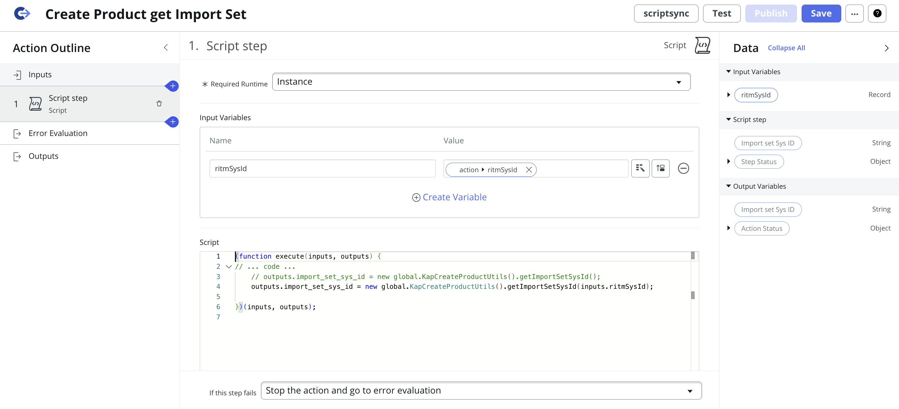

Automate Creation of Product and Sold Product Records from Excel via Flow and Transform Map
Author: Rohan Aditya
Hi everyone 👋
I’d like to share a quick use case we implemented in ServiceNow.
Use Case Overview
Create Product and Sold Product records in ServiceNow by simply submitting a Catalog Item with an Excel file attachment containing product details.
Approach
- Create a Catalog Item.
- Create a Flow that gets triggered when the Catalog Item is submitted.
- In the Flow, trigger a Transform Map that processes the uploaded Excel file.
- Inside the Transform Map, use Transform Scripts to Create Products and Sold Products.
- After record creation, add a comment to the RITM containing clickable links to the newly created Products and Sold Products.
Implementation Steps
-
Create Products and Sold Products using a Catalog Item in ServiceNow.
- The Catalog Item will have one primary question: "Number of products to create" with options:
- Single Product
- Multiple Products
- If Single Product is selected:
- Show questions for Name of Product, Product Model Number, Model Category, and whether accounts need to be linked (Yes/No).
- If Yes is selected, show a question to select accounts to be linked to the Sold Product.
- If Multiple Products is selected:
- Show a link to download the product details Excel template.
- Ask for an Excel attachment containing the filled product details.


- The Catalog Item will have one primary question: "Number of products to create" with options:
-
Configure a Flow to automate processing of the Catalog Item submission.
- Create a new Flow in Flow Designer triggered on Service Catalog, currently showing flow handling multiple products only
- Look Up Attachment Record: Retrieve the Excel file attachment belonging to the requested item submitted via the Catalog Item.
- Copy Attachment: Create a copy of the attachment to safely process/import data without affecting the original file.
-
Get Import Set:
Trigger a custom Flow action that calls a method - getImportSetSysId from Script Include - KapCreateProductUtils method passing the Requested Item sys_id.
This action loads the Excel attachment data into a new Import Set table, links each imported row to the Requested Item for traceability, and returns the Import Set record ID for further processing.
Here are the important steps in creating a custom action to fetch import set sys_id
Step 1 - Input Step

Step 2.1 - Script Step
Step 2.2 - Script Step
Step 3 - Output Step

- Look Up Data Source Record: Reference the Data Source by its sys_id, corresponding to the import set or Excel data source configuration.
- Look Up Records in Import Set: Find records in the import set created for the multiple products.
- Trigger Transform Map: Run the Transform Map to map and create actual Product records in the target table from the import set data.
-
Create Script Include:
var KapCreateProductUtils = Class.create(); KapCreateProductUtils.prototype = { initialize: function() {}, getImportSetSysId: function (ritmSysId) { var dataSourceSysId = gs.getProperty('kap.create.product.data.source.sys.id'); var grDataSource = new GlideRecord('sys_data_source'); if (grDataSource.get(dataSourceSysId)) { var loader = new GlideImportSetLoader(); var importSetRec = loader.getImportSetGr(grDataSource); loader.loadImportSetTable(importSetRec, grDataSource); importSetRec.state = "loaded"; importSetRec.update(); var importTableName = importSetRec.getValue("table_name"); if (!importTableName) { gs.error("Import Set Table Name is null. Cannot proceed."); return; } var rowGR = new GlideRecord(importTableName); rowGR.addQuery("import_set", importSetRec.getUniqueValue()); rowGR.query(); while (rowGR.next()) { rowGR.u_requested_item = ritmSysId; rowGR.update(); } return importSetRec.getUniqueValue(); } return null; }, triggerTransformMap: function(importSetRecSysID) { var transformSysId = gs.getProperty('kap.create.product.transform.map.sys.id'); var transformWorker = new GlideImportSetTransformerWorker(importSetRecSysID, transformSysId); transformWorker.setBackground(true); transformWorker.start(); }, type: 'KapCreateProductUtils' }; - Delete Attachment: Remove the copied attachment after processing to clean up.
- Update Requested Item Record: Update the original Requested Item record, for example, by adding comments or status to reflect completion.
- Add a Work Note or comment to the Requested Item with clickable links to the newly created records.
- Activate the Flow to enable this automation.


Here are the important steps in creating a custom action to Trigger Transform Map

Step 1 - Input Step

Step 1 - Input Step
-
Transform Maps
- Create a new Import Set Table by providing the blank excel template(I selected existing as I have already created it)
- Create a Transform Map
- Create a Field mappings as required
- Populate RITM Number in product's Comment
- Transform Scripts
- onAfter Transform Script to create Sold Product after Product is created
- If Accounts are mentioned in Excel, create Sold Products and attach them to the mentioned accounts.
- If Accounts are not mentioned, create Sold Products and attach them to a Default Account.
- onComplete Transform Script to create a link to display created Products and Sold Products


(function runTransformScript(source, map, log, target) { var productSysId = target.sys_id.toString(); var productName = source.u_name_of_the__demo_product_1; if (!productSysId || !productName) { return; } // If accounts are specified if (source.u_which_accoun_d_to_be_linked && source.u_which_accoun_d_to_be_linked.trim() !== '') { var accountNames = source.u_which_accoun_d_to_be_linked.split(/\s*,\s*/); var validAccounts = []; for (var i = 0; i < accountNames.length; i++) { if (isValidAccount(accountNames[i])) { validAccounts.push(accountNames[i]); } } var accountGr = new GlideRecord('customer_account'); accountGr.addQuery('name', 'IN', validAccounts); accountGr.query(); while (accountGr.next()) { createSoldProduct(productSysId, productName, accountGr.sys_id.toString(), accountGr.name.toString()); } if (accountNames.length != validAccounts.length) { // Use generic account var genericAccountSysId = gs.getProperty('kap.sold.product.generic.account.sys.id'); if (genericAccountSysId) { var genericAccountGr = new GlideRecord('customer_account'); if (genericAccountGr.get(genericAccountSysId)) { createSoldProduct(productSysId, productName, genericAccountSysId, genericAccountGr.name.toString()); } } } } else { // Use generic account var genericAccountId = gs.getProperty('kap.sold.product.generic.account.sys.id'); if (genericAccountId) { var genericAccGr = new GlideRecord('customer_account'); if (genericAccGr.get(genericAccountId)) { createSoldProduct(productSysId, productName, genericAccountId, genericAccGr.name.toString()); } } } // Reusable function to insert a Sold Product function createSoldProduct(productId, productName, accountId, accountName) { var soldProduct = new GlideRecord('sn_install_base_sold_product'); soldProduct.initialize(); soldProduct.product = productId; soldProduct.account = accountId; soldProduct.name = productName + ' - ' + accountName; soldProduct.insert(); } function isValidAccount(accountName) { var accountGr = new GlideRecord('customer_account'); accountGr.addQuery('name', accountName); accountGr.query(); if (accountGr.hasNext()) { return true; } return false; } })(source, map, log, target);(function runTransformScript(source, map, log, target /*undefined onStart*/ ) { var rowGr = new GlideRecord(source.getTableName()); rowGr.addQuery('import_set', source.import_set); rowGr.query(); if (!rowGr.next() || !rowGr.u_requested_item) { return; } var ritmRef = rowGr.u_requested_item; // Get Products var productGr = new GlideRecord(target.getTableName()); productGr.addQuery('sys_created_by', 'system'); productGr.addQuery('comments', 'CONTAINS', ritmRef.number); productGr.query(); var productSysIds = []; while (productGr.next()) { productSysIds.push(productGr.getValue('sys_id')); } // Get Sold Products by checking product.comments CONTAINS RITM number var soldSysIds = []; var soldGr = new GlideRecord('sn_install_base_sold_product'); soldGr.addQuery('sys_created_by', 'system'); soldGr.addEncodedQuery('productISNOTEMPTY'); soldGr.addEncodedQuery('product.sys_idIN' + productSysIds); soldGr.query(); while (soldGr.next()) { soldSysIds.push(soldGr.getValue('sys_id')); } if (productSysIds.length === 0 && soldSysIds.length === 0) { return; } var baseUrl = gs.getProperty('glide.servlet.uri'); var commentText = ''; if (productSysIds.length > 0) { var productListUrl = baseUrl + target.getTableName() + '_list.do?sysparm_query=sys_idIN' + productSysIds.join(','); commentText += 'Click <a href="' + productListUrl + '" target="_blank">here</a> to view the created Products.\n'; } if (soldSysIds.length > 0) { var soldListUrl = baseUrl + 'sn_install_base_sold_product_list.do?sysparm_query=sys_idIN' + soldSysIds.join(','); commentText += 'Click <a href="' + soldListUrl + '" target="_blank">here</a> to view the created Sold Products.'; } var ritmGR = new GlideRecord('sc_req_item'); if (ritmGR.get(ritmRef)) { ritmGR.comments = commentText; ritmGR.update(); } })(source, map, log, target);
Output
- Created Products

- Created Sold Products